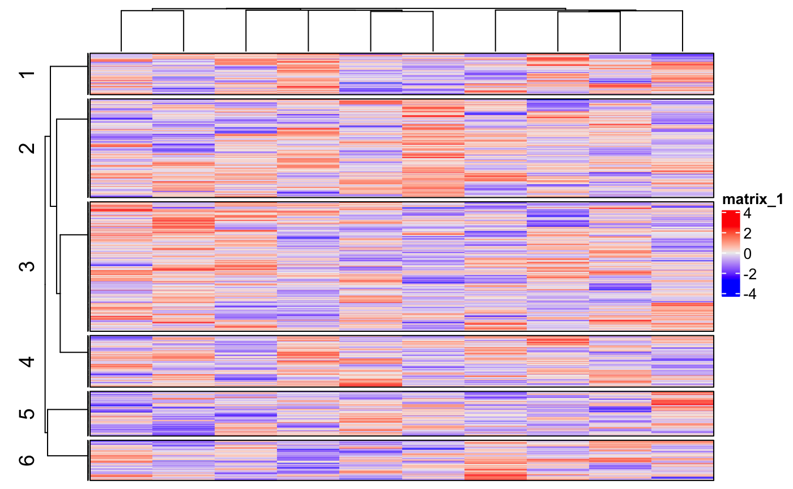
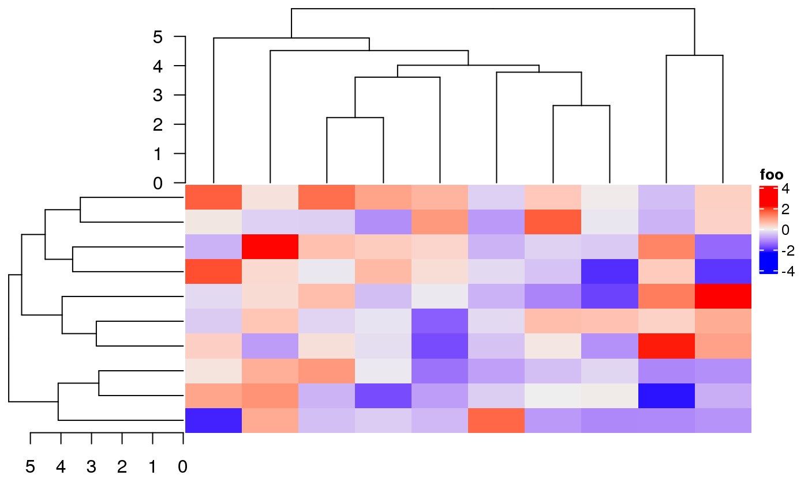
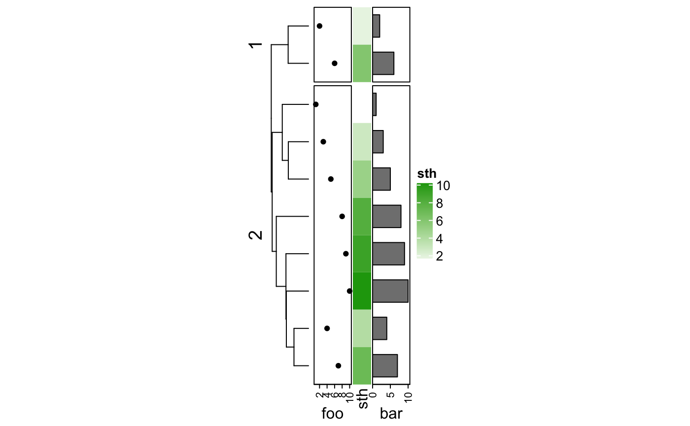

vignettes/most_probably_asked_questions.Rmd
most_probably_asked_questions.RmdIn this case, you need to use draw() function explicitly. See https://jokergoo.github.io/ComplexHeatmap-reference/book/a-single-heatmap.html#plot-the-heatmap and https://jokergoo.github.io/ComplexHeatmap-reference/book/a-list-of-heatmaps.html#plot-the-heamtap-list.
For retrieving orders and dendrograms from a single heatmap. See https://jokergoo.github.io/ComplexHeatmap-reference/book/a-single-heatmap.html#get-orders-and-dendrograms-from-heatmap.
For retrieving orders and dendrograms from a list of heatmaps. See https://jokergoo.github.io/ComplexHeatmap-reference/book/a-list-of-heatmaps.html#get-orders-and-dendrograms-from-a-list-of-heatmaps.
For complex annotations generated by anno_*() functions, width or height should be set inside the anno_*() function, such as anno_points(..., height = ...). The size of simple annotations is controlled by anno_simple_size. The width/height and annotation_width/annotation_height are used to adjust the size for multiple annotations which are put in one HeatmapAnnotation object. See https://jokergoo.github.io/ComplexHeatmap-reference/book/heatmap-annotations.html#multiple-annotations
In the annotation functions anno_*(), the argument axis_param can be used to set the axes. The value should be a list and the default settings for axis can be get by:
default_axis_param("column")
default_axis_param("row")The style of legends can be controlled by heatmap_legend_param in Heatmap(), or annotation_legend_param in HeatmapAnnotation(). The parameters for controlling legends are those arguments in Legend() function. See https://jokergoo.github.io/ComplexHeatmap-reference/book/legends.html#heatmap-and-annotation-legends.
The layout of the ComplexHeatmap is not perfect that it is still possible some of the text are drawn out of the plotting region. In this case, you can set the padding argument in draw() function to increase the blank areas around the final plot. See https://jokergoo.github.io/ComplexHeatmap-reference/book/a-list-of-heatmaps.html#manually-increase-space-around-the-plot.
Yes, use %v% instead of +. See https://jokergoo.github.io/ComplexHeatmap-reference/book/a-list-of-heatmaps.html#vertical-concatenation.
Yes, all the text-related elements (e.g. titles, row names, legend titles, legend labels, …) allow methematical expression.
You can set newpage = FALSE in draw() function and use grid.layout() to manage the layout of your panels.
pushViewport(viewport(layout = grid.layout(...)))
pushViewport(viewport(layout.pos.row = ..., layout.pos.col = ...))
draw(ht, newpage = FALSE) # or draw(ht_list, newpage = FALSE)
popViewport()
...But I more suggest to use grid.grabExpr() to directly capture the output of the heatmap and later draw the whole plot as a single graphic element by grid.draw().
ht_grob = grid.grabExpr(draw(ht, ...))
pushViewport(viewport(layout = grid.layout(...)))
pushViewport(viewport(layout.pos.row = ..., layout.pos.col = ...))
grid.draw(ht_grob)
popViewport()
...You can first group your rows into several groups and make a group-level dendrogram on it. See following example:
m = matrix(rnorm(1000*10), nr = 1000)
hc = hclust(dist(m))
group = cutree(hc, k = 6)
Heatmap(m, cluster_rows = cluster_within_group(t(m), group),
row_split = 6, border = TRUE) # it would be better if also set row_split
Heatmap is used to visualize the global patterns of your matrix while not every single row or column. I suggest to random sample rows or columns into a reasonable small number, and the final heatmap should look the same as if you still insist to use the full matrix.
You need to use decorate_row_dend() or decorate_column_dend() to manually add the axes. See following examples:
m = matrix(rnorm(100), 10)
ht = Heatmap(m, name = "foo",
row_dend_width = unit(4, "cm"),
column_dend_height = unit(4, "cm")
)
draw(ht, padding = unit(c(15, 2, 2, 2), "mm"))
decorate_column_dend("foo", {
grid.yaxis()
})
decorate_row_dend("foo", {
vp = current.viewport()
xscale = vp$xscale
grid.xaxis(at = xscale[2] - 0:5, label = 0:5)
})
Note for the left row dendrogram, the x-axis is from right to left, you need to self-define at and label in grid.xaxis() function.
You can also check annotation_axis_grob() function (later use grid.draw() to draw the axes) to draw a nicer axis.
Yes, this is what it should be expected because k-means uses random start points and it might give different results for different runs. To solve this problem, you do either way as follows:
set.seed(...) before making the heatmap. This makes sure the random seed is always the same for different runs.row_km_repeats/column_km_repeats to run k-means multiple times to get a final consensus k-means clustering. Note you might still get different results, but the chance is much smaller than just running k-means once.You need to assign the dendrograms to a zero-row/column matrix:
hc = hclust(dist(matrix(rnorm(100), 10)))
Heatmap(matrix(nc = 0, nr = 10), cluster_rows = hc,
right_annotation = rowAnnotation(
foo = anno_points(1:10),
sth = 1:10,
bar = anno_barplot(1:10)),
row_split = 2)
The vignette (https://jokergoo.github.io/ComplexHeatmap-reference/book/) contains huge number of examples and plots showing different usage of the package. It is sometimes not easy to find the solution you are looking for. In this case, don’t hesitate to write me an email. I am glad to answer all of your questions!